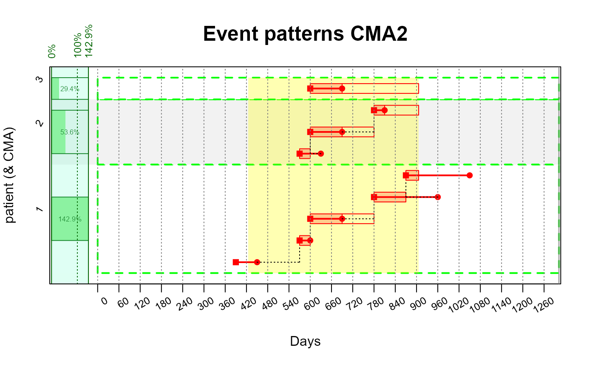
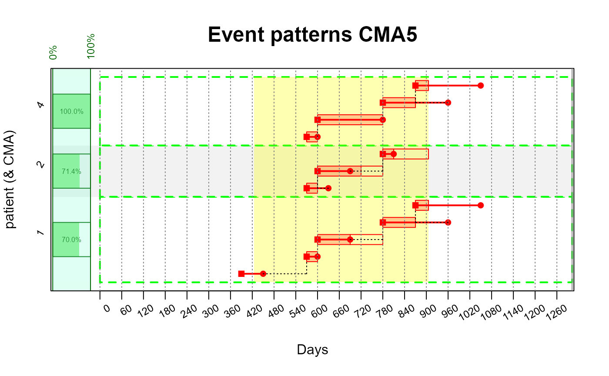
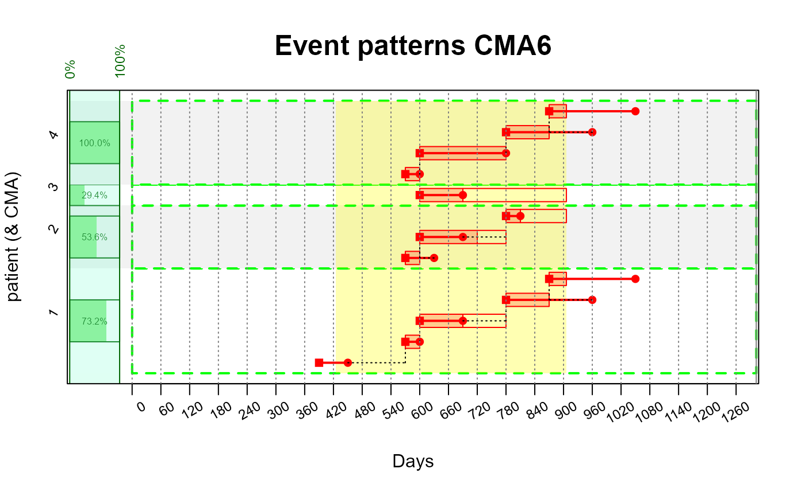
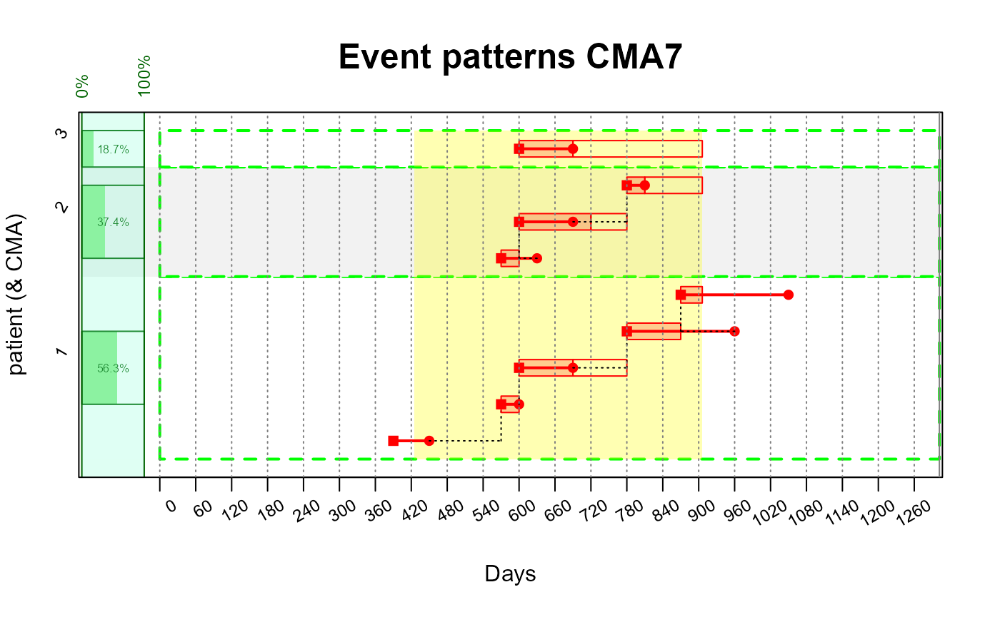

Intro to CMA
a04-adherence.RmdMedication adherence can be quantified in several different ways
depending on how days supply, gaps, and observation periods are
interpreted.
The AdherenceFromOMOP package supports all nine variations of
Continuous Multiple-Interval Measures of Medication
Availability/Gaps (CMA1–CMA9) implemented in AdhereR.
This vignette provides short examples of how each CMA behaves using a
small synthetic dataset.
For detailed documentation, see: https://www.adherer.eu/adherence/
Example Dataset
| person_id | drug_concept_id | drug_exposure_start_date | days_supply | cohort_start_date | cohort_end_date | observation_period_start_date | observation_period_end_date |
|---|---|---|---|---|---|---|---|
| 1 | 1 | 2010-12-02 | 60 | 2011-01-06 | 2012-05-01 | 2009-11-07 | 2013-06-01 |
| 1 | 1 | 2011-05-31 | 30 | 2011-01-06 | 2012-05-01 | 2009-11-07 | 2013-06-01 |
| 1 | 1 | 2011-06-30 | 90 | 2011-01-06 | 2012-05-01 | 2009-11-07 | 2013-06-01 |
| 1 | 1 | 2011-12-27 | 180 | 2011-01-06 | 2012-05-01 | 2009-11-07 | 2013-06-01 |
| 1 | 1 | 2012-03-26 | 180 | 2011-01-06 | 2012-05-01 | 2009-11-07 | 2013-06-01 |
| 2 | 1 | 2011-05-31 | 60 | 2011-01-06 | 2012-05-01 | 2009-11-07 | 2013-06-01 |
| 2 | 1 | 2011-06-30 | 90 | 2011-01-06 | 2012-05-01 | 2009-11-07 | 2013-06-01 |
| 2 | 1 | 2011-12-27 | 30 | 2011-01-06 | 2012-05-01 | 2009-11-07 | 2013-06-01 |
| 3 | 1 | 2011-06-30 | 90 | 2011-01-06 | 2012-05-01 | 2009-11-07 | 2013-06-01 |
CMA1
Medication availability based on days supplied (excluding last event)
- Events that start before observation window are not included
Requires ≥2 events
Computes: sum(days_supply values except last) / (days between first and last event)
CMA2
Medication availability including the last event, but using observation window end
- Events that start before observation window are not included
- Computes: sum(all days_supply values) / (time from first event → observation window end)

CMA 5
Proportion of gap days relative to time between first and last event. Equivalent to 1 – CMA1 but computed using theoretical use and accumulated gap time.
Requires ≥2 events
Events that start before observation window are not included
-
Computes: (number of days of theoretical use) / (days between first and last event)
- Theoretical use for sample patient number 1: 30 + 90 + 90. The start of the last event cuts off the length of the second from last event. In CMA1 the second from last event is included entirely.

CMA6
Proportion of gap days relative to time between first and end of observation window. Equivalent to 1 – CMA2 but computed using theoretical use and accumulated gap time.
- Events that start before observation window are not included
-
Computes: (number of days of theoretical use) / (days between first and last event)
- Theoretical use for sample patient number 1: 30 + 90 + 90 + 36.

CMA7
Gap-based measure using the full observation window start → end. No anchoring on first event. This measures adherence relative to the entire observation period.
- Includes events from before the observation period starts
-
Computes: (number of days of theoretical use) / (number of days in observation window)
- Theoretical use for sample patient number 1: 25 + 30 + 90 + 90 + 36.

CMA8
Lagged version of CMA7. The observation window starts after a short “lag” from the event that starts before the observation window. Useful when excluding an initial adjustment period.
-
Computes: (number of days of theoretical use) / (lagged start to end of observation window)
- Number of days accounting for lagged start for patient 1: 481 - 25.
CMA9
Weighted daily adherence measure. This method evaluates, for every day, how much medication supply covers that day and averages across the entire window. Useful when event timing and overlaps matter substantially.
-
Computes (number of days in the observation window, each weighted by the ratio of days supply applicable to their event interval) / (start to end of observation window)
-
Patient 3: ((1 - 612/702) * 306) / 481
612 number of gap days between the end of the first (and only) event and the end of the follow-up window.
702 number of days between the start of the first event and the end of the follow-up window.
306 number of days between the start of the first event and the end of the observation window.
481 total length of the observation window.
Patient 2: ((1 - 0/30)30 + (1 - 60/180)180 + (1 - 492/522) * 126) / 481
Patient 1: ((1 - 120/180)145 + (1 - 0/30)30 + (1 - 90/180)180 + (1 - 0/90) 90 + (1 - 162/432) * 36) / 481
-